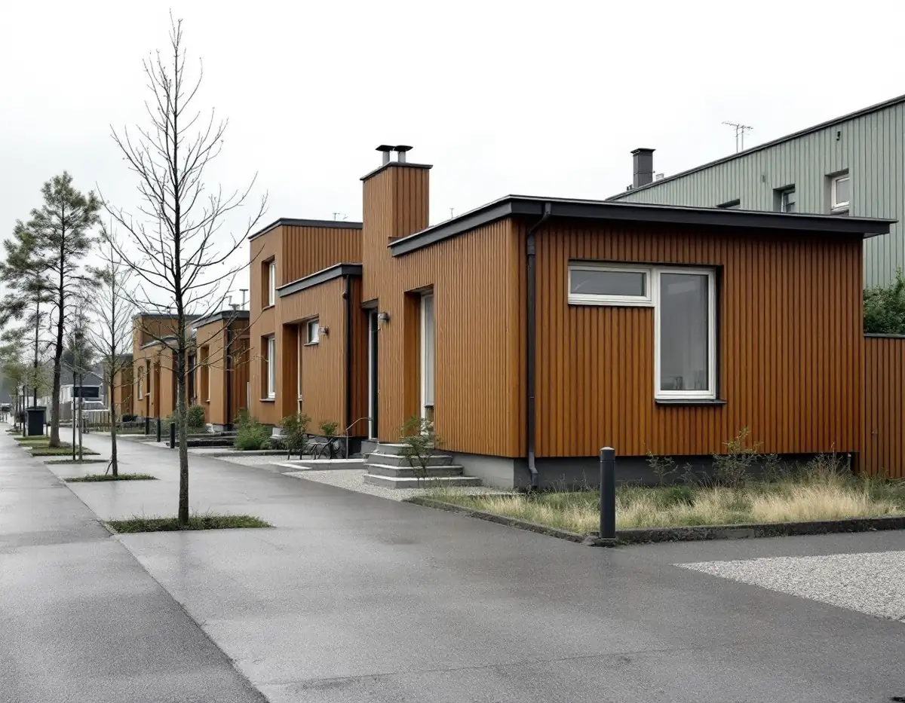
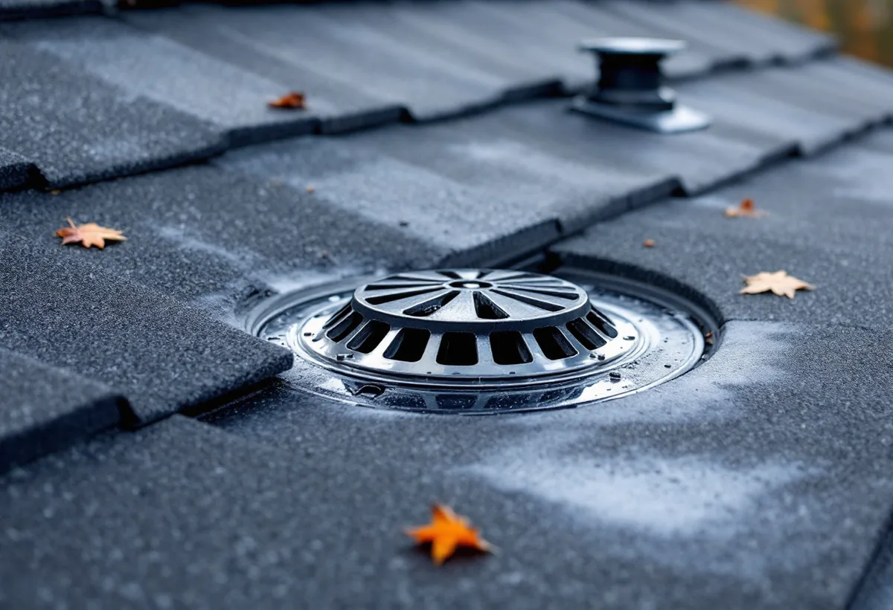
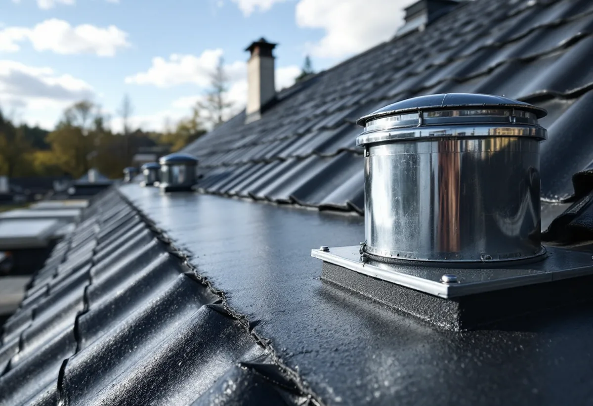

Besiktning
Vi går upp på taket och kontrollerar skarvar, genomföringar och brunnar.
Kista byggdes ut på bara fem år, 1975–1980, och fick både flerbostadshus och omkring 780 småhus. I dag finns knappt 1 000 småhus i stadsdelen. Många har platta eller låglutande tak, och på dem är det tätskiktet och avvattningen som avgör hur länge taket håller. En takrenovering i Kista handlar därför oftare om papp, duk och brunnar än om pannor.

Stockholms stad köpte marken på Järvafältet 1966, och mellan 1975 och 1980 byggdes Kista ut. Enligt Stadsmuseet tillämpade staden här betydligt friare former för arkitekturen än i de andra stadsdelarna på Järvafältet. Bebyggelsen fick 2 500 lägenheter i flerbostadshus och omkring 780 småhus.
Stadens statistik för 2024 visar 971 småhus i Kista. 482 ägs med äganderätt och 404 är bostadsrätter. Husen är alltså nästan 50 år gamla, och många tak har nått den ålder då tätskiktet behöver bytas för första eller andra gången.

På ett brant tegeltak rinner vattnet av innan det hinner göra skada. På ett platt eller låglutande tak blir det kvar längre, och Boverket skriver att låglutande tak belastas mer av nederbörd. Då är tätskiktet – papp eller duk – det enda som skiljer regnvattnet från takkonstruktionen.
Enligt Boverket läcker vatten oftast in vid genomföringar, skarvar, ränndalar och infästningar. Det är också där vi börjar när vi besiktar ett lågt tak i Kista: runt ventilationshuvar, skorstenar, takfönster och anslutningen mot fasaden.
Större låglutande tak har ofta brunnar i ränndalarna som leder vattnet till invändiga stuprör. Boverket varnar för att silarna på brunnarna kan sättas igen av löv och mossa. Då blir vattnet stående, kan frysa och skada tätskiktet – och i värsta fall rinna in vid låga trösklar.
Därför ska ett sådant tak ha ett bräddavlopp som leder bort vattnet om brunnarna sätter igen. Vid en renovering kontrollerar vi att det finns, att det sitter lägre än trösklar och krön och att det klarar ett skyfall. Saknas det föreslår vi var det kan placeras.
Äger du ditt radhus beställer du själv. I de radhusområden där husen är bostadsrätter är det föreningens stadgar som avgör vem som ansvarar för taket. Ligger ansvaret på föreningen är det styrelsen som beställer, och då brukar det vara klokt att göra hela längan på en gång.
Även med äganderätt kan grannarna vara berörda, eftersom radhus har sammanbyggda tak. Vi visar hur skarven mot grannens tak löses innan arbetet börjar, så att det nya och det gamla tätskiktet möts på ett säkert sätt.
Är det gamla tätskiktet torrt och fast kan ett nytt ofta läggas ovanpå. Har fukt kommit in under behöver det gamla rivas så att underlaget kan torka eller bytas. Vi tar därför prov på flera ställen innan vi föreslår en metod.
Radhusen i en länga är byggda lika. Ändrar du takets material eller färg på ett av dem påverkar det helheten, så vi föreslår samma utförande om du inte uttryckligen vill något annat. Läs mer om hur vi arbetar med plåttak och takbesiktning.
Ett lågt tak ger sällan stora varningar innan det läcker. Enligt Boverket kan fukt som tränger in ge fuktfläckar i innertak och väggar, lukt inomhus och på sikt röta i trämaterial. Märker du en fläck i taket eller en jordkällarlukt i ett rum under taket är det värt att låta någon titta upp.
Två gånger om året är det bra att se efter brunnarna och rännorna från en stege eller låta oss göra det: på hösten när löven fallit och på våren när snön har smält. Ligger det vattensamlingar kvar ett par dagar efter regn har taket svackor där tätskiktet slits fortare.

Vi går upp på taket och kontrollerar skarvar, genomföringar och brunnar.
Vi undersöker om underlaget är torrt innan metoden väljs.
Lagning, nytt tätskikt ovanpå eller rivning – beskrivet med foton.
Skarven mot grannens tak och vem som beställer klaras ut.
Nytt tätskikt, nya brunnar och bräddavlopp vid behov.
Avrinningen testas och allt dokumenteras.
Skatteverket räknar reparation och byte av takpannor, underlagspapp och hängrännor på ett småhus som rotarbete när du äger huset och bor i det eller har det som fritidshus. Avdraget är 30 procent av arbetskostnaden, högst 50 000 kronor per person och år och högst 75 000 kronor tillsammans med rutavdrag. Material och resor ger inget avdrag, enligt Skatteverket.
Geal drar avdraget direkt på fakturan. Är ni flera ägare har var och en sitt eget tak för avdraget. Är radhuset en bostadsrätt och taket föreningens ansvar ger arbetet inget rotavdrag för dig som medlem. Läs mer under rotavdrag för takarbete.
Kostnaden i Kista påverkas av takets yta, om det gamla tätskiktet kan ligga kvar, antalet genomföringar och brunnar, om bräddavlopp saknas och om flera hus görs samtidigt. Läs mer om vad en takrenovering kostar.
Takbyte, besiktning och plåtarbeten.
Takläggare i Kista →Så fungerar en omläggning.
Takrenovering och takomläggning →Det här styr priset.
Vad kostar en takrenovering? →Räkna på takytan och ROT.
Takbyte-kalkylator →Solhem, Bromsten, Flysta och Sundby.
Takrenovering i Spånga →Norrviken, Tureberg och Edsberg.
Takrenovering i Sollentuna →Jakobsberg, Viksjö och Kallhäll.
Takrenovering i Järfälla →